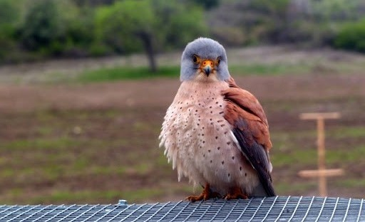

БДЗП стартира работа по проект за опазването на вечерната ветрушка

Основната цел на проекта е да се съберат данни за гнездовата популация на вида в страната и за заплахите във всеки един от районите. Това ще помогне да започне на работа по изготвяне на План за действие за опазване на вечерната ветрушка. Успоредно с полевите
дейности ще се изработят и поставят в близост до гнездовите райони изкуствени гнездилки с цел подпомагане гнезденето на вида.
Бригада „Атанасовско езеро 2019“ събра над 60 души в полза на птиците

В 31-вото издание на природозащитен лагер „Атанасовско езеро 2019“ се включиха над 60 участници, които посветиха шест дни от лятото, за да помогнат на птиците в Атанасовско езеро и защитена местност „Пода“.
Основните цели на лагера
бяха свързани с поддръжката и подобряването на места за почивка и гнездене в Атанасовско езеро и околните влажни зони, важни за птиците; и с въвличането и запознаването на доброволците със заплахите за птиците и влажните зони, създавайки
по този начин повече посланици на природозащитните проблеми.
Доброволци се включиха в дейностите по опазване на къдроглавия пеликан

В последната седмица на месец август 14 доброволци взеха участие в дейностите по мониторинг на пеликаните и други видове водолюбиви птици в Бургаските езера, както и в обхождането на рискови за птиците електропроводи, разположени в близост до Специално защитените зони от Натура 2000 „Комплекс Мандра-Пода“ и „Атанасовско езеро“. Благодарение на доброволците успешно бе установен броят на къдроглавите пеликани във всички места за нощувка в района около Бургас – 298 индивида
.17 пеликана загинаха за месец край Бургаските езера

Експерти установиха множество пеликани, загинали при сблъсък с въздушни проводници от електропреносната и електроразпределителната мрежа. Жертвите включват 15 птици от вида розов пеликан и 2 – от застрашения къдроглав пеликан. Всички птици са установени
на територията на Специално защитена зона „Комплекс Мандра-Пода”. Зоната е от изключителна важност и за двата вида пеликани по време на прелет, когато във водите на комплекса се хранят десетки хиляди пеликани.